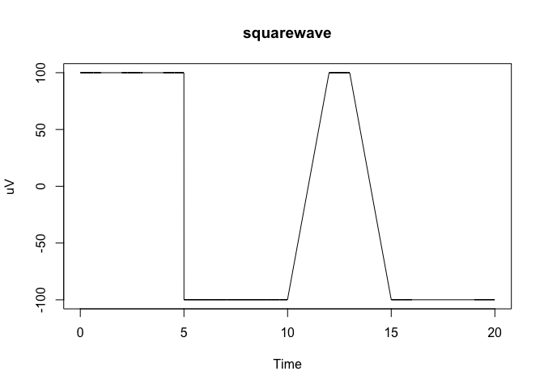
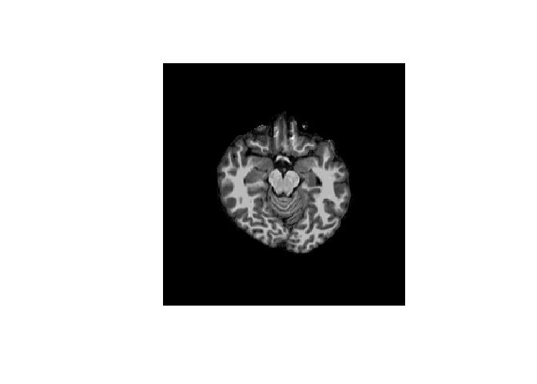

The goal of ieegio is to provide integrated toolbox for common file formats used in intracranial Electroencephalography (iEEG) and deep-brain stimulation (DBS). Currently the package is under active development The following formats have been (or will be) supported:
Electrophysiology
| Name | Common Extensions | Read | Write |
|---|---|---|---|
| EDF(+)/BDF(+) (European Data Format) | *.edf |
✅ | |
| BrainVision |
*.vhdr, *.vmrk, *.eeg, *.dat
|
✅ | |
| BCI2000 | *.dat |
✅ | |
| NEV/NSx (BlackRock neural-event/signal) |
*.nev, *.ns1, *.ns2, …, *.ns6
|
✅ | |
| NWB (Neurodata Without Borders) | *.nwb |
✅ | ✅ |
| MEF | *.mef |
-
NWBformat only has low-level support. Please see examples withhelp(read_nwb)
Imaging
| Name | Common Extensions | Read | Write |
|---|---|---|---|
| NIfTI (Neuroimaging Informatics Technology Initiative) | *.nii[.gz] |
✅ | ✅ |
| MGH/MGZ (Massachusetts General Hospital format) |
*.mgh, *.mgz
|
✅ | ✅ |
| GIfTI (Geometry format under the Neuroimaging Informatics Technology Initiative) | *.gii[.gz] |
||
| FreeSurfer surface | e.g. *h.pial, *h.white
|
||
| FreeSurfer node value | e.g. *h.curv, *h.sulc
|
||
| Surface annotation | *.annot |
Please feel free to make a wish-list by posting an issue in this repository.
Miscellaneous
| Name | Common Extensions | Read | Write |
|---|---|---|---|
| Matlab | *.mat |
✅ | ✅ |
| HDF5 | *.h5 |
✅ | ✅ |
| YAML |
*.yml, *.yaml
|
✅ | ✅ |
| JSON | *.json |
✅ | ✅ |
| INI | *.ini |
✅ | |
| FST | *.fst |
✅ | ✅ |
Installation
You can install the development version of ieegio from GitHub with:
# install.packages("pak")
pak::pak("dipterix/ieegio")ieegio provides additional sample data. To download them:
# list all the sample data
sample_names <- ieegio::ieegio_sample_data()
lapply(sample_names, ieegio::ieegio_sample_data)Example 1: Read Formatted ephys Data
This is a basic example which reads sample EDF data
library(ieegio)
edf_path <- ieegio_sample_data("edfPlusD.edf")
edf <- read_edf(edf_path, verbose = FALSE)
edf
#> <ieegio::EBDFCache>
#> File type : EDF+
#> Patient : X X X X
#> Recording : Startdate 10-DEC-2009 X X test_generator
#> Start time : 2009-12-10 12:44:02
#> Continuous recording : FALSE
#> Loaded channels : n=11
#> Signal channels : 1-11
#> Annotation channels :You can check header, channel table, and annotations
header <- edf$get_header()
chan_tbl <- edf$get_channel_table()
annot <- edf$get_annotations()You can also query a channel by:
# get Channel 1
channel <- edf$get_channel(1)
channel
#> E/BDF(+) signal
#> Channel : 1
#> label : squarewave
#> Unit : uV
#> Sample rate: 200.0
#> Continuous : no
#> Number of timepoints: 2200
#> Time range : 0.0 to 20.0 secLet’s plot the channel
plot(
x = channel$time, y = channel$value,
xlab = "Time", ylab = channel$info$Unit,
main = channel$info$Label,
type = "l"
)
Most formats (EDF, BrainVision, BlackRock, BCI2000) provide similar syntax, with an exception NWB since NWB is essentially folder-based format that is enclosed within an HDF5 file. Check documentations and examples in help(read_nwb) for more details.
Example 2: Imaging Data
Each volume data (NIfTI, MGH, …) contains header, data, and transforms list.
library(ieegio)
nii_path <- ieegio_sample_data("brain.demosubject.nii.gz")
nii <- read_nii(nii_path)
nii
#> <Image Volume>
#> Type : rnifti/nifti
#> Shape: c(256L, 256L, 256L)
#> Transforms:
#> vox2ras:
#> [-1 0 0 131.6]
#> [ 0 0 1 -127.5]
#> [ 0 -1 0 127.5]
#> [ 0 0 0 1]
#> vox2ras_tkr:
#> [-1 0 0 -128]
#> [ 0 0 1 -128]
#> [ 0 -1 0 -128]
#> [ 0 0 0 1]
#> vox2fsl:
#> [1 0 0 0]
#> [0 1 0 0]
#> [0 0 1 0]
#> [0 0 0 1]The header object is the low-level handler
nii$header
#> NIfTI-1 format
#> Type : nifti
#> Data Type : 2 (UINT8)
#> Bits per Pixel : 8
#> Slice Code : 0 (Unknown)
#> Intent Code : 0 (None)
#> Qform Code : 1 (Scanner_Anat)
#> Sform Code : 1 (Scanner_Anat)
#> Dimension : 256 x 256 x 256
#> Pixel Dimension : 1 x 1 x 1
#> Voxel Units : mm
#> Time Units : secThe transforms contain transforms from volume (column, row, slice) index to other coordinate systems. The most commonly used one is vox2ras, which is a 4x4 matrix mapping the voxels to scanner (usually T1-weighted) RAS (right-anterior-superior) system.
nii$transforms$vox2ras
#> [,1] [,2] [,3] [,4]
#> [1,] -1 0 0 131.6145
#> [2,] 0 0 1 -127.5000
#> [3,] 0 -1 0 127.5000
#> [4,] 0 0 0 1.0000The data object contains the volume image
image(nii$data[, 128, ], asp = 1, axes = FALSE,
col = colorRampPalette(c("black", "white"))(255))